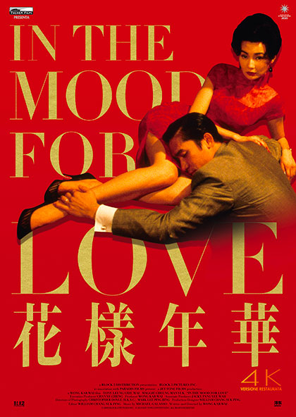

In The Mood For Love
Diretto da: Wong Kar-wai
Data di rilascio: 29 Settembre 2000
Incassi: $ 12.9 milioni
"In the Mood for Love" è un film del 2000 diretto da Wong Kar-wai, che esplora i temi della solitudine, dell'amore non corrisposto e del rimpianto in un'atmosfera delicata e poetica.
Trama:
Ambientato a Hong Kong nel 1962, il film racconta la storia di Chow Mo-wan e Su Li-zhen, due vicini di casa che scoprono che i loro rispettivi coniugi li stanno tradendo. Nel tentativo di comprendere meglio i loro coniugi, Chow e Su sviluppano un rapporto platonico ma intensamente emotivo, cercando di ricreare le circostanze che hanno portato al tradimento. Il film esplora il desiderio e il dolore attraverso sguardi furtivi, silenzi e momenti di struggente bellezza. Nonostante il loro crescente affetto reciproco, Chow e Su scelgono di non portare avanti la loro relazione per non cadere nello stesso errore dei loro coniugi.
Con una regia magistrale e una fotografia elegante, "In the Mood for Love" cattura l'essenza dell'amore e del rimpianto, mostrando come le emozioni più profonde possano rimanere inesprimibili. Wong Kar-wai crea un'opera d'arte visivamente e narrativamente ricca, che rimane una delle storie d'amore più iconiche della storia del cinema.